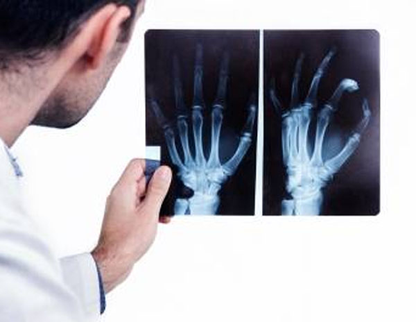
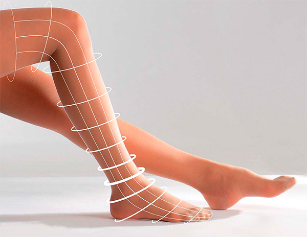
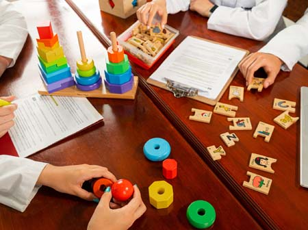
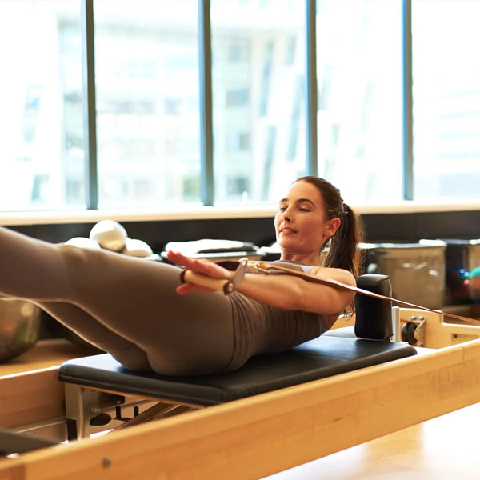

Especialidades médicas
Todas las especialidades, en un mismo lugar
Además de kinesiología, contamos con un staff de especialidades médicas para acompañar tu salud de forma integral.

Traumatología
Lesiones óseas, articulares y musculares.
Reumatología
Enfermedades del sistema músculo-esquelético.

Flebología
Salud venosa y circulatoria.
Dermopatología
Diagnóstico y cuidado de la piel.
Nutrición
Planes alimentarios personalizados.
Psicología
Acompañamiento y salud mental.
Psiquiatría
Diagnóstico y tratamiento psiquiátrico.

Psicopedagogía
Aprendizaje y desarrollo.
Genética ADN
Estudios genéticos y de filiación.
Estética
Tratamientos faciales y corporales.

Pilates
Fortalecimiento y control corporal.
¿Tenés dudas sobre qué especialidad necesitás?
Contanos tu consulta por WhatsApp y te orientamos con el especialista adecuado.